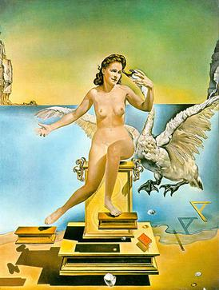
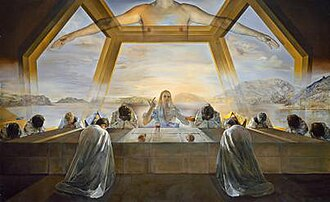

The research · φ · the most astonishing number
The Golden Ratio
The golden ratio — φ (phi), approximately 1.6180339887… — is the irrational number defined by the condition that a line divided into two parts has the same ratio between the whole and the longer part as between the longer part and the shorter. It shows up in geometry, in number theory, in plant growth, in human anatomy, in the proportions Renaissance artists chose deliberately, and — with considerably more controversy — in everything from the Parthenon to seashells. The Field Trilogy uses φ as a recurring motif because the same constant that organizes how a sunflower packs its seeds also organizes how the trilogy thinks about resonance, self-similarity, and tuning.
A reader's companion to one of the trilogy's recurring symbols. The canonical source for this page is Mario Livio's The Golden Ratio: The Story of Phi, the World's Most Astonishing Number (Broadway, 2002), supplemented by György Doczi's The Power of Limits (Shambhala, 1981) and Roger V. Jean's Phyllotaxis (Cambridge, 1994).
The definition
Take a line segment and divide it into two pieces, a longer (a) and a shorter (b). The division is "in the golden ratio" if:
(a + b) / a = a / b = φ
That is: the whole is to the larger part as the larger part is to the smaller. There is exactly one positive number that satisfies this. It is the unique positive solution of x² = x + 1, namely:
φ = (1 + √5) / 2 = 1.6180339887…
Two properties already make φ unusual. First, it is the only number whose reciprocal differs from it by exactly one: 1/φ = φ − 1 = 0.6180… — a fact you can verify in a single line of algebra. Second, it is the only number whose square differs from it by exactly one: φ² = φ + 1. These two identities are what make φ the "most self-similar" of all numbers: under inversion and squaring it folds back on itself with only a single-unit shift. Every other irrational scrambles under those operations.
Origin: from Euclid to Fibonacci to Pacioli
The ratio first appears in writing in Euclid's Elements (c. 300 BCE), Book VI, Definition 3, where it is called the division of a line in extreme and mean ratio. Euclid did not give it any aesthetic or mystical interpretation; he used it as a tool. It is the proportion needed to construct the regular pentagon and the dodecahedron — one of the five Platonic solids — and that is the role he assigns it.
It returns into European mathematics with Leonardo of Pisa ("Fibonacci") in the Liber Abaci (1202), but indirectly, through the recursion that bears his name: 1, 1, 2, 3, 5, 8, 13, 21, 34, 55… — each term the sum of the two before. The ratio of successive Fibonacci numbers converges to φ. The convergence is rapid: by the time you reach 13/8 = 1.625 you are already accurate to about 0.4%.
The name "divina proportione" (divine proportion) is the contribution of the Franciscan friar Luca Pacioli, whose 1509 book of that title was illustrated by his friend Leonardo da Vinci. Pacioli's theological framing — that the ratio's irrationality reflects God's incomprehensibility, its trinitarian structure reflects the Trinity — was characteristic of his moment but is not a mathematical claim. Kepler in 1611 called it the second-greatest jewel of geometry after the Pythagorean theorem. The label "golden ratio" itself is comparatively recent, fixed by Martin Ohm in 1835.
The mathematical facts (what is exact)
Some properties of φ are uncontroversial and exact:
- Continued-fraction expansion: φ = 1 + 1/(1 + 1/(1 + 1/(1 + …))). All ones, forever. Of all irrational numbers, φ has the simplest possible continued-fraction representation. This is what is meant by the technical claim that φ is "the most irrational number" — it is the slowest of all irrationals to be approximated by ordinary fractions.
- Fibonacci convergence: If Fn is the n-th Fibonacci number, then Fn+1/Fn → φ as n grows. This is Binet's formula in disguise.
- The golden rectangle: A rectangle with sides in ratio φ : 1 has the property that if you remove the largest possible square from it, the remaining rectangle is again in ratio φ : 1. This is the geometric expression of self-similarity. Iterate the removal and the corner-points trace a logarithmic spiral.
- The regular pentagon: In a regular pentagon, the ratio of the diagonal to the side is exactly φ. The pentagram inscribed in it produces a cascade of nested φ-ratios; this is why φ is sometimes called the "pentagonal constant." It is also why the symbol of the Pythagoreans was the pentagram.
- Trigonometric form: 2 cos(π/5) = φ — the golden ratio is twice the cosine of 36°. This is the bridge between φ and Fourier analysis: 36° is one-fifth of a half-rotation, which is why φ shows up wherever fivefold symmetry shows up.
Where φ really does appear (botany and biology)
The cleanest empirical appearance of φ in nature is in phyllotaxis — the arrangement of leaves, scales, and seeds in plants. In the seed head of a sunflower, the floret at angle n from the center is placed at angle n × 137.508° from the previous floret, measured around the center. That angle is the "golden angle": 360° × (1 − 1/φ) = 360°/φ² ≈ 137.508°.
The reason is not aesthetic but optimization. As Roger V. Jean showed in Phyllotaxis (1994), the golden angle is the unique angle that prevents successive primordia from ever aligning. Any rational angle (any fraction of 360°) eventually closes into a finite set of rays, leaving wedge-shaped gaps. The golden angle, being driven by the "most irrational" number, is the angle that distributes new primordia most uniformly — the most efficient packing of a growing structure with a single growth tip. The same logic explains the Fibonacci spiral counts in pinecones (5 and 8, or 8 and 13), pineapples (8 and 13), and sunflowers (34 and 55, or 55 and 89, or 89 and 144). The plants are not "trying to" make φ. They are subject to a packing problem whose solution happens to be φ.
The cleanest secondary appearance is in logarithmic spirals — the shells of Nautilus pompilius, the curl of an unfurling fern, the spirals of galactic arms. These spirals are self-similar — they look the same at any scale — and the golden spiral is the particular log-spiral whose growth factor equals φ per quarter-turn. Nautilus shells are log-spirals, but their growth factor is closer to about 1.33 than to φ; the "nautilus equals phi" claim is one of the most cited and one of the most overstated. The real story is that nature uses log-spirals because they grow without changing shape; φ is one possible growth factor, and a famous one, but not the empirical one for nautilus.
Where the φ claim is overstated (art, architecture, anatomy)
Mario Livio's book is, more than anything, an act of careful correction. A great many of the "golden ratio in the Parthenon / in the Mona Lisa / in the Great Pyramid" claims, when measured rigorously, do not survive scrutiny. The Parthenon's façade is not in golden ratio: depending on which edges you measure between, the ratio drifts between 1.5 and 1.7. The pyramid claim depends on choosing the apothem rather than the height, and on accepting tolerances of about 1%. Da Vinci's Mona Lisa, Adolf Zeising's purported "golden body" proportions, and the spiral overlays popular in design education are mostly the result of measurement choices made after the conclusion.
The honest version is: φ appears sometimes in art and architecture, mostly in works whose creators (Pacioli, Le Corbusier, Dalí, the Modulor system) chose it deliberately as a compositional rule. It does not appear by hidden necessity in every well-proportioned object. The body has many proportional relationships and a handful of them are close to φ; many more are close to other ratios. The trilogy treats φ as a real and astonishing constant of geometry and biology, not as a universal aesthetic skeleton.
Dalí — the painter who took φ literally
Salvador Dalí is one of the few artists who not only used the golden ratio but documented his use of it. In the late 1940s and through the 1950s he steeped himself in The Geometry of Art and Life (1946) by the Romanian-French mathematician and aesthetician Matila Ghyka, and built several major paintings on Ghyka's pentagonal and golden-section frameworks. Where most artists in the popular literature on φ are retrofitted into the story by overlay-happy biographers, Dalí walked into it.

pentagram — diagonals in φ to sides

dodecahedron — 12 pentagonal faces

tesseract net — 4D cube unfolded
Leda Atomica (1949) is the cleanest case. A preparatory pencil study survives showing Leda, the swan, the egg, and the pedestal suspended within a precisely-constructed pentagonal pentagram whose diagonals are in golden ratio to its sides. The composition's logarithmic-spiral arms tighten toward the egg at the center. Nothing in the painting touches the ground — Dalí wanted "the geometry of suspended things," a corpuscular world in which matter and grace float by mathematical necessity. The work is the centerpiece of his self-named "atomic mysticism" period: Catholic devotional content laid over a mathematical chassis he could defend in writing.
The Sacrament of the Last Supper (1955) is more architectural. The room around the apostles is a partial regular dodecahedron — twelve pentagonal panels framing the scene above and behind the figures. Every pentagon in a dodecahedron has its diagonals in golden ratio to its edges, so the architecture is φ at every joint. The canvas itself measures 167 × 268 cm (ratio ≈ 1.605, well inside φ tolerance), and the figure of Christ falls at the canvas's golden-section division. Dalí said he painted it to make geometric mysticism visible to ordinary churchgoers. It hangs in the National Gallery of Art in Washington and is one of the most-reproduced religious paintings of the 20th century.
His Crucifixion (Corpus Hypercubus) from 1954 belongs to the same project at a different scale — Christ crucified on a four-dimensional cube unfolded into three, the geometry making explicit what the iconography only suggests. Across this period Dalí carried a copy of Ghyka the way other painters carry sketchbooks.
What makes Dalí an honest case in the broader "φ in art" debate is the paper trail. He wrote about it, drew the constructions, named Ghyka explicitly, and welcomed the comparison. Of all the painters routinely listed as φ-users, he is the one for whom the claim is fully and verifiably true.
Painting reproductions above are low-resolution thumbnails included for educational fair-use commentary on the geometric methods of the artist. © Salvador Dalí / Fundació Gala-Salvador Dalí.
The music connection
Within tempered music theory, φ does not appear in the standard scale. The twelve-tone equal-temperament system divides the octave into ratios of the twelfth root of 2; φ has no privileged place in it. What φ does have a place in is rhythmic and formal proportion. Béla Bartók's structural placements — the golden-mean point of a movement as a climax — are well documented (Ernő Lendvai's analyses, however contested in detail, point to a genuine practice). Debussy and Satie made similar uses. Helmholtz's On the Sensations of Tone (1863) showed that consonance is a function of frequency-ratio simplicity (2:1, 3:2, 4:3); φ is not in that list, but the structural deployment of φ in time — "the climax falls at the φ point of the piece" — is a separate, empirically defensible compositional choice.
Where φ does show up acoustically is in the cochlea. The mammalian cochlea is a logarithmic spiral, and the work of Manoussaki et al. (2006, 2008) shows that its graded curvature — the way the spiral tightens as it climbs — performs hydrodynamic work on low-frequency sound. The cochlea is a log-spiral resonator whose geometry is part of its hearing physics. Its growth factor is not exactly φ, but it lives in the family.
See φ for yourself — interactive
The slider below controls a single parameter: the rate at which a logarithmic spiral grows per quarter-turn. Drag the slider toward 1.618 — or press snap to φ — and watch what changes. The φ-rectangles mode shows the Fibonacci-square construction that converges to the golden rectangle. The phyllotaxis mode shows what 137.5° (the golden angle, 360° / φ²) does to seed packing: at φ, the sunflower head fills without overlap or gap; a degree or two off, gaps and bands appear that the φ angle alone avoids. The same constraint — no two seeds align radially — is what makes φ the optimal growth ratio for any biological structure that must add new material indefinitely without redundancy. This is the geometry the trilogy's antenna metaphor rests on.
Drag the slider. Snap to φ. Toggle the four modes.
The same construction, as a short video
An 11-second animation of the Fibonacci-square build — ten squares appearing one at a time (sides 1, 1, 2, 3, 5, 8, 13, 21, 34, 55), the golden spiral threading every corner at the end. Convenient for share-friendly contexts where the iframe widget can't run.
The audible companion to this geometry is José & Alex's chord — the augmented triad C / E / G♯ stacked at exact 5:4 major thirds (16 : 20 : 25) on the φ-tuned C = 266.67 Hz. The chord José keeps in his case files in Anima; the same shape Alex finds, eight years later, traced into the angles of the Webb-fractal photograph in Numen. Father and son hearing the same architecture across the gap. The chord refuses to resolve because the augmented triad has no root the ear can settle into — harmonically it is what the φ-spiral is geometrically: self-similar and unwilling to be reduced. Hear the chord on the tunings page →
The Webb triangle — angles and frequencies share the same φ
The right triangle José sketches in his Anima journal — and Alex finds again, eight years later, traced into the angles of the Webb-fractal photograph in Numen — uses φ at two scales at once. Its angles divide the right angle in a 1/φ progression. The frequencies obtained by playing those angles as a chord divide a φ-interval in a √φ progression. Same irrational, two different powers.
Angles — the 1/φ progression
90° = the right angle
90° ÷ φ ≈ 55.62°
90° ÷ φ² ≈ 34.38°
Each acute angle is the previous one divided by φ. The triangle closes precisely because 1 + 1/φ + 1/φ² = 2, so 90° · (1 + 1/φ + 1/φ²) = 180°.
Frequencies — the √φ progression
E = 164.81 Hz
E × √φ ≈ 209.64 Hz (G♯)
E × φ = 266.67 Hz (C)
The outer pair spans one φ-interval (C is exactly φ × E). The middle note is its geometric midpoint — √φ above the root, √φ below the top.
Why different powers? The triangle is a single object dividing two different quantities. A right angle divided into a successive-1/φ sequence; a φ-interval divided into two equal logarithmic halves. To split a multiplicative interval of φ into two equal multiplicative steps, each step must be √φ. So the angles use φ−1 per step, the frequencies use φ1/2 per step. The shared structural anchor is the irrational itself.
The chord this triangle plays — E · G♯ · C in 1 : √φ : φ ratios — is what the Webb-triangle widget sounds when you click a vertex on the Reading & References page. Transposed up a φ-interval (top note becomes the new root, the same √φ architecture climbs above it), this chord becomes Sable's chord at 266.67 · 339.20 · 431.36 Hz. José & Alex's chord shares the same three pitch-classes (C / E / G♯) but uses just-intonation 5:4 thirds (16 : 20 : 25) instead of φ-ratios — same notes, different irrationality. The triangle is the geometric source; the chords are its audible versions in two different harmonic dialects.
For why the trilogy anchors all of this on C = 266.67 Hz specifically — not 261.626, not 264 — see the φ-tuned C explainer →
Why this matters for the trilogy
The Field Trilogy uses φ in three different registers, and each is precise.
First, φ as the geometry of self-similar growth. The trilogy's running metaphor of biological tissue as a "tuned antenna" is not arbitrary: the antenna is shaped, at every scale from the cochlea to the branching of the bronchi to the spiral of the inner ear, by the same logarithmic-spiral / golden-angle logic that governs phyllotaxis. The body is a log-spiral antenna because that is the most efficient shape for an organism that has to grow without losing its tuning. This is the literal sense in which the trilogy's narrators are phi-tuned: their tissues are organized at multiple scales by a geometry whose limit is φ.
Second, φ as the symbol of irreducible irrationality. Of all numbers, φ is the slowest to be approximated by any ratio of integers. It is the number that resists rational reduction most thoroughly. In the trilogy's vocabulary this is exactly the property that makes φ a fitting signature for what cannot be captured by quantification: the qualitative, the experiential, the lived. Limen returns to this in the chapters on the hard problem: the residue that no neural model captures is, in this metaphorical sense, φ-shaped.
Third, φ as a compositional ethic. The trilogy itself uses φ-placement structurally — the climactic transition in each volume falls near the golden-mean point of the book. This is not numerology. It is the same craft choice Bartók made: the climax sits where the breath naturally turns. φ is, in this register, a number that has earned the right to organize attention.
The book-length canonical treatment is Mario Livio, The Golden Ratio: The Story of Phi, the World's Most Astonishing Number (Broadway Books, 2002). Livio is an astrophysicist who set out to write a φ-celebration book and ended up writing the most rigorous debunking of φ-mythology in print, without diminishing the parts of the story that are real. Read together with György Doczi's The Power of Limits (1981) for the geometric-aesthetic case and Roger V. Jean's Phyllotaxis (1994) for the biological-mathematical case. For φ's appearance in the cochlea, see the Manoussaki et al. papers in the Reading list.
← Reading & References